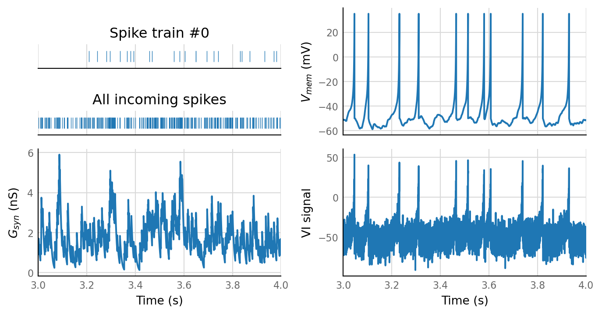
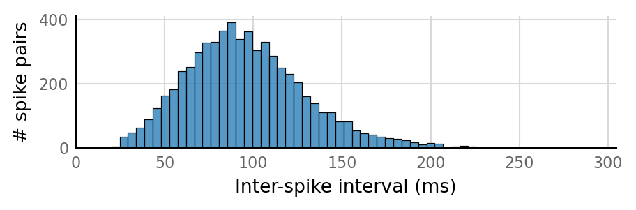
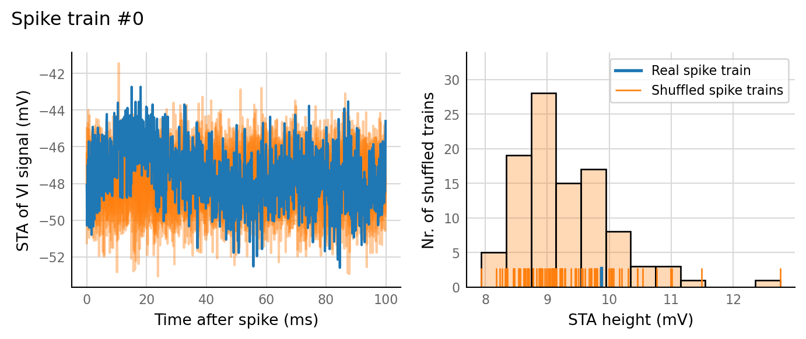
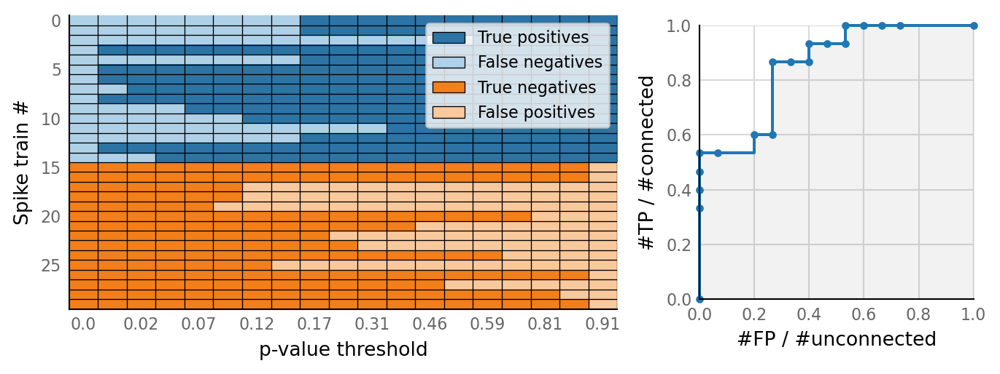

2021-02-22 • Spikes-only connection tests¶
Setup¶
from voltage_to_wiring_sim.notebook_init import *
Preloading: numpy, numba, matplotlib.pyplot, seaborn.
Importing from submodules … ✔
Imported `np`, `mpl`, `plt`, `sns`, `pd`
Imported codebase (`voltage_to_wiring_sim`) as `v`
Imported `*` from `v.support.units`
Setup autoreload
v.print_reproducibility_info()
This cell was last run by tfiers on yoga on Mon 22 Feb 2021, at 18:35 (UTC+0100).
Last git commit (Mon 22 Feb 2021, 18:28).
Uncommited changes to 2 files.
Simulate¶
Generate some data, in our classic N-to-1 setup.
from voltage_to_wiring_sim.N_to_1_experiment import N_to_1_SimParams, simulate, plot_sim_slice
from voltage_to_wiring_sim.sim.neuron_params import cortical_RS
params = N_to_1_SimParams(
sim_duration = 10 * minute,
timestep = 0.1 * ms,
num_spike_trains = 30,
p_connected = 0.5,
spike_rate = 20 * Hz,
Δg_syn = 0.8 * nS,
τ_syn = 7 * ms,
neuron_params = cortical_RS,
imaging_spike_SNR = 10,
rng_seed = 1800,
);
sim_data = simulate(params);
plot_sim_slice(sim_data, t_start=3 * second, duration=1 * second);

v.sim.izhikevich_neuron.show_output_spike_stats(sim_data.izh_output);

Output spike rate (1 / median ISI): 10.8 Hz
test_data, test_summaries = v.N_to_1_experiment.test_connections(sim_data);
v.N_to_1_experiment.plot_conntest(test_data, test_summaries, sim_data)


classifs = v.conntest.classification.sweep_threshold(test_summaries, sim_data.is_connected);
v.N_to_1_experiment.plot_classifications_with_ROC(classifs)

Cross-correlation¶
Reproducibility¶
v.print_reproducibility_info(verbose=True)
This cell was last run by tfiers on yoga
on Wed 27 Jan 2021, at 18:16 (UTC+0100).
Last git commit (Wed 27 Jan 2021, 18:08).
No uncommitted changes.
Platform:
Windows-10
CPython 3.8.6 (C:\conda\python.exe)
Intel(R) Core(TM) i7-10510U CPU @ 1.80GHz
Dependencies of voltage_to_wiring_sim and their installed versions:
numpy 1.19.5
matplotlib 3.3.3
numba 0.52.0
joblib 1.0.0
seaborn 0.11.1
scipy 1.6.0
preload 2.2
nptyping 1.4.0
Full conda list:
# packages in environment at C:\conda:
#
# Name Version Build Channel
anyio 2.0.2 py38haa244fe_4 conda-forge
appdirs 1.4.4 pyh9f0ad1d_0 conda-forge
argon2-cffi 20.1.0 py38h294d835_2 conda-forge
async_generator 1.10 py_0 conda-forge
atomicwrites 1.4.0 pyh9f0ad1d_0 conda-forge
attrs 20.3.0 pyhd3deb0d_0 conda-forge
babel 2.9.0 pyhd3deb0d_0 conda-forge
backcall 0.2.0 pyh9f0ad1d_0 conda-forge
backports 1.0 py_2 conda-forge
backports.functools_lru_cache 1.6.1 py_0 conda-forge
black 20.8b1 py_1 conda-forge
bleach 3.2.2 pyh44b312d_0 conda-forge
bokeh 2.2.3 py38haa244fe_0 conda-forge
brotlipy 0.7.0 py38h294d835_1001 conda-forge
bzip2 1.0.8 h8ffe710_4 conda-forge
ca-certificates 2020.12.5 h5b45459_0 conda-forge
certifi 2020.12.5 py38haa244fe_1 conda-forge
cffi 1.14.4 py38hd8c33c5_1 conda-forge
chardet 4.0.0 py38haa244fe_1 conda-forge
click 7.1.2 pyh9f0ad1d_0 conda-forge
cloudpickle 1.6.0 py_0 conda-forge
colorama 0.4.4 pyh9f0ad1d_0 conda-forge
conda 4.9.2 py38haa244fe_0 conda-forge
conda-package-handling 1.7.2 py38h8934438_0 conda-forge
console_shortcut 0.1.1 4
cryptography 3.3.1 py38hd8c33c5_1 conda-forge
cycler 0.10.0 py_2 conda-forge
cytoolz 0.11.0 py38h294d835_3 conda-forge
dask 2021.1.0 pyhd8ed1ab_0 conda-forge
dask-core 2021.1.0 pyhd8ed1ab_0 conda-forge
dataclasses 0.7 pyhb2cacf7_7 conda-forge
decorator 4.4.2 py_0 conda-forge
defusedxml 0.6.0 py_0 conda-forge
distributed 2021.1.1 py38haa244fe_0 conda-forge
docutils 0.16 pypi_0 pypi
entrypoints 0.3 pyhd8ed1ab_1003 conda-forge
freetype 2.10.4 h546665d_1 conda-forge
fsspec 0.8.5 pyhd8ed1ab_0 conda-forge
gitdb 4.0.5 py_0 conda-forge
gitpython 3.1.12 pyhd8ed1ab_0 conda-forge
heapdict 1.0.1 py_0 conda-forge
icu 68.1 h0e60522_0 conda-forge
idna 2.10 pyh9f0ad1d_0 conda-forge
importlib-metadata 3.4.0 py38haa244fe_0 conda-forge
importlib_metadata 3.4.0 hd8ed1ab_0 conda-forge
iniconfig 1.1.1 pyh9f0ad1d_0 conda-forge
intel-openmp 2020.3 h57928b3_311 conda-forge
ipykernel 5.4.2 py38h7b7c402_0 conda-forge
ipython 7.19.0 py38hc5df569_2 conda-forge
ipython_genutils 0.2.0 py_1 conda-forge
ipywidgets 7.6.3 pyhd3deb0d_0 conda-forge
jedi 0.17.2 py38haa244fe_1 conda-forge
jinja2 2.11.2 pyh9f0ad1d_0 conda-forge
joblib 1.0.0 pyhd8ed1ab_0 conda-forge
jpeg 9d h8ffe710_0 conda-forge
json5 0.9.5 pyh9f0ad1d_0 conda-forge
jsonschema 3.2.0 py_2 conda-forge
jupyter_client 6.1.11 pyhd8ed1ab_1 conda-forge
jupyter_contrib_core 0.3.3 py_2 conda-forge
jupyter_contrib_nbextensions 0.5.1 py38h32f6830_1 conda-forge
jupyter_core 4.7.0 py38haa244fe_1 conda-forge
jupyter_highlight_selected_word 0.2.0 py38haa244fe_1002 conda-forge
jupyter_latex_envs 1.4.6 py38h32f6830_1001 conda-forge
jupyter_nbextensions_configurator 0.4.1 py38haa244fe_2 conda-forge
jupyter_server 1.2.2 py38haa244fe_1 conda-forge
jupyterlab 3.0.5 pyhd8ed1ab_0 conda-forge
jupyterlab-classic 0.1.3 pyhd8ed1ab_0 conda-forge
jupyterlab-sublime 0.4.1 pypi_0 pypi
jupyterlab_pygments 0.1.2 pyh9f0ad1d_0 conda-forge
jupyterlab_server 2.1.2 pyhd8ed1ab_0 conda-forge
jupyterlab_widgets 1.0.0 pyhd8ed1ab_1 conda-forge
jupytray 0.7.post10+dirty dev_0 <develop>
keyring 21.8.0 pypi_0 pypi
kiwisolver 1.3.1 py38hbd9d945_1 conda-forge
krb5 1.17.2 hbae68bd_0 conda-forge
libarchive 3.5.1 h8686738_1 conda-forge
libblas 3.9.0 7_mkl conda-forge
libcblas 3.9.0 7_mkl conda-forge
libclang 11.0.1 default_h5c34c98_1 conda-forge
libcurl 7.71.1 h4b64cdc_8 conda-forge
libiconv 1.16 he774522_0 conda-forge
liblapack 3.9.0 7_mkl conda-forge
libpng 1.6.37 h1d00b33_2 conda-forge
libsodium 1.0.18 h8d14728_1 conda-forge
libsolv 0.7.17 h7755175_0 conda-forge
libssh2 1.9.0 hb06d900_5 conda-forge
libtiff 4.2.0 hc10be44_0 conda-forge
libxml2 2.9.10 hf5bbc77_3 conda-forge
libxslt 1.1.33 h65864e5_2 conda-forge
llvmlite 0.35.0 py38h57a6900_1 conda-forge
locket 0.2.0 py_2 conda-forge
lxml 4.6.2 py38h292cb97_1 conda-forge
lz4-c 1.9.3 h8ffe710_0 conda-forge
lzo 2.10 he774522_1000 conda-forge
m2w64-gcc-libgfortran 5.3.0 6 conda-forge
m2w64-gcc-libs 5.3.0 7 conda-forge
m2w64-gcc-libs-core 5.3.0 7 conda-forge
m2w64-gmp 6.1.0 2 conda-forge
m2w64-libwinpthread-git 5.0.0.4634.697f757 2 conda-forge
mamba 0.7.8 py38hdd88130_0 conda-forge
markupsafe 1.1.1 py38h294d835_3 conda-forge
matplotlib-base 3.3.3 py38h34ddff4_0 conda-forge
menuinst 1.4.16 py38he774522_1
mistune 0.8.4 py38h294d835_1003 conda-forge
mkl 2020.4 hb70f87d_311 conda-forge
more-itertools 8.6.0 pyhd8ed1ab_0 conda-forge
mpmath 1.1.0 py_0 conda-forge
msgpack-python 1.0.2 py38hbd9d945_1 conda-forge
msys2-conda-epoch 20160418 1 conda-forge
mypy_extensions 0.4.3 py38haa244fe_3 conda-forge
nb_conda_kernels 2.3.1 py38haa244fe_0 conda-forge
nbclassic 0.2.6 pyhd8ed1ab_0 conda-forge
nbclient 0.5.1 py_0 conda-forge
nbconvert 6.0.7 py38haa244fe_3 conda-forge
nbdime 2.1.0 py_0 conda-forge
nbformat 5.1.2 pyhd8ed1ab_1 conda-forge
nest-asyncio 1.4.3 pyhd8ed1ab_0 conda-forge
notebook 6.2.0 py38haa244fe_0 conda-forge
nptyping 1.4.0 pypi_0 pypi
numba 0.52.0 py38h4c96930_0 conda-forge
numpy 1.19.5 py38h0cc643e_1 conda-forge
olefile 0.46 pyh9f0ad1d_1 conda-forge
openssl 1.1.1i h8ffe710_0 conda-forge
packaging 20.8 pyhd3deb0d_0 conda-forge
pandas 1.2.1 py38h4c96930_0 conda-forge
pandoc 2.11.4 h8ffe710_0 conda-forge
pandocfilters 1.4.2 py_1 conda-forge
parso 0.7.1 pyh9f0ad1d_0 conda-forge
partd 1.1.0 py_0 conda-forge
pathspec 0.8.1 pyhd3deb0d_0 conda-forge
patsy 0.5.1 py_0 conda-forge
pickleshare 0.7.5 py_1003 conda-forge
pillow 8.1.0 py38hf7ce48b_1 conda-forge
pip 21.0 pyhd8ed1ab_0 conda-forge
pkginfo 1.6.1 pypi_0 pypi
pluggy 0.13.1 py38haa244fe_4 conda-forge
powershell_shortcut 0.0.1 3
preload 2.2 pypi_0 pypi
prometheus_client 0.9.0 pyhd3deb0d_0 conda-forge
prompt-toolkit 3.0.14 pyha770c72_0 conda-forge
psutil 5.8.0 py38h294d835_1 conda-forge
puprelease 1.6.1 dev_0 <develop>
py 1.10.0 pyhd3deb0d_0 conda-forge
py-cpuinfo 7.0.0 pypi_0 pypi
pycosat 0.6.3 py38h294d835_1006 conda-forge
pycparser 2.20 pyh9f0ad1d_2 conda-forge
pygments 2.7.4 pyhd8ed1ab_0 conda-forge
pyopenssl 20.0.1 pyhd8ed1ab_0 conda-forge
pyparsing 2.4.7 pyh9f0ad1d_0 conda-forge
pyqt 5.12.3 py38haa244fe_7 conda-forge
pyqt-impl 5.12.3 py38h885f38d_7 conda-forge
pyqt5-sip 4.19.18 py38h885f38d_7 conda-forge
pyqtchart 5.12 py38h885f38d_7 conda-forge
pyqtwebengine 5.12.1 py38h885f38d_7 conda-forge
pyrsistent 0.17.3 py38h294d835_2 conda-forge
pysocks 1.7.1 py38haa244fe_3 conda-forge
pytest 6.2.1 py38haa244fe_1 conda-forge
python 3.8.6 h7840368_4_cpython conda-forge
python-dateutil 2.8.1 py_0 conda-forge
python_abi 3.8 1_cp38 conda-forge
pytz 2020.5 pyhd8ed1ab_0 conda-forge
pywin32 300 py38h294d835_0 conda-forge
pywin32-ctypes 0.2.0 pypi_0 pypi
pywinpty 0.5.7 py38h32f6830_1 conda-forge
pyyaml 5.4.1 py38h294d835_0 conda-forge
pyzmq 21.0.1 py38h7a0e47e_0 conda-forge
qt 5.12.9 h5909a2a_3 conda-forge
readme-renderer 28.0 pypi_0 pypi
regex 2020.11.13 py38h294d835_1 conda-forge
reproc 14.2.1 h8ffe710_0 conda-forge
reproc-cpp 14.2.1 h0e60522_0 conda-forge
requests 2.25.1 pyhd3deb0d_0 conda-forge
requests-toolbelt 0.9.1 pypi_0 pypi
rfc3986 1.4.0 pypi_0 pypi
ruamel_yaml 0.15.80 py38h294d835_1003 conda-forge
scikit-learn 0.24.1 py38ha09990b_0 conda-forge
scipy 1.6.0 py38h5f893b4_0 conda-forge
seaborn 0.11.1 h57928b3_0 conda-forge
seaborn-base 0.11.1 pyhd8ed1ab_0 conda-forge
send2trash 1.5.0 py_0 conda-forge
setuptools 49.6.0 py38haa244fe_3 conda-forge
setuptools-scm 5.0.1 pypi_0 pypi
six 1.15.0 pyh9f0ad1d_0 conda-forge
smmap 3.0.5 pyh44b312d_0 conda-forge
snakeviz 2.1.0 pyh9f0ad1d_0 conda-forge
sniffio 1.2.0 py38haa244fe_1 conda-forge
sortedcontainers 2.3.0 pyhd8ed1ab_0 conda-forge
sqlite 3.34.0 h8ffe710_0 conda-forge
statsmodels 0.12.1 py38h347fdf6_2 conda-forge
sympy 1.7.1 py38haa244fe_1 conda-forge
tblib 1.6.0 py_0 conda-forge
terminado 0.9.2 py38haa244fe_0 conda-forge
testpath 0.4.4 py_0 conda-forge
threadpoolctl 2.1.0 pyh5ca1d4c_0 conda-forge
tk 8.6.10 h8ffe710_1 conda-forge
toml 0.10.2 pyhd8ed1ab_0 conda-forge
toolz 0.11.1 py_0 conda-forge
tornado 6.1 py38h294d835_1 conda-forge
tqdm 4.56.0 pyhd8ed1ab_0 conda-forge
traitlets 5.0.5 py_0 conda-forge
twine 3.3.0 pypi_0 pypi
typed-ast 1.4.2 py38h294d835_0 conda-forge
typing_extensions 3.7.4.3 py_0 conda-forge
typish 1.9.1 pypi_0 pypi
unitlib 0.3 pypi_0 pypi
urllib3 1.26.2 pyhd8ed1ab_0 conda-forge
vc 14.2 hb210afc_2 conda-forge
voltage-to-wiring-sim 0.1 dev_0 <develop>
vs2015_runtime 14.28.29325 h5e1d092_0 conda-forge
wcwidth 0.2.5 pyh9f0ad1d_2 conda-forge
webencodings 0.5.1 py_1 conda-forge
wheel 0.36.2 pyhd3deb0d_0 conda-forge
widgetsnbextension 3.5.1 py38haa244fe_4 conda-forge
win_inet_pton 1.1.0 py38haa244fe_2 conda-forge
wincertstore 0.2 py38haa244fe_1006 conda-forge
windows-curses 2.2.0 pypi_0 pypi
winpty 0.4.3 4 conda-forge
winshell 0.6 pypi_0 pypi
xz 5.2.5 h62dcd97_1 conda-forge
yaml 0.2.5 he774522_0 conda-forge
zeromq 4.3.3 h0e60522_3 conda-forge
zict 2.0.0 py_0 conda-forge
zipp 3.4.0 py_0 conda-forge
zlib 1.2.11 h62dcd97_1010 conda-forge
zstd 1.4.8 h4e2f164_1 conda-forge